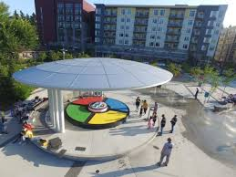
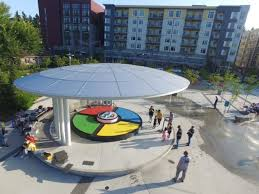

Play
Rules
- Press the Play button. Simon will give the first signal. Repeat the signal by pressing the same color lens.
- Simon will duplicate the first signal and add one. Repeat these two signals by pressing the same color lenses, in order.
- Simon will duplicate these first two signals and add one.
- If you fail to repeat a sequence exactly, Simon responds with some weird sound. This means you've lost, and the sequence of signals ends.